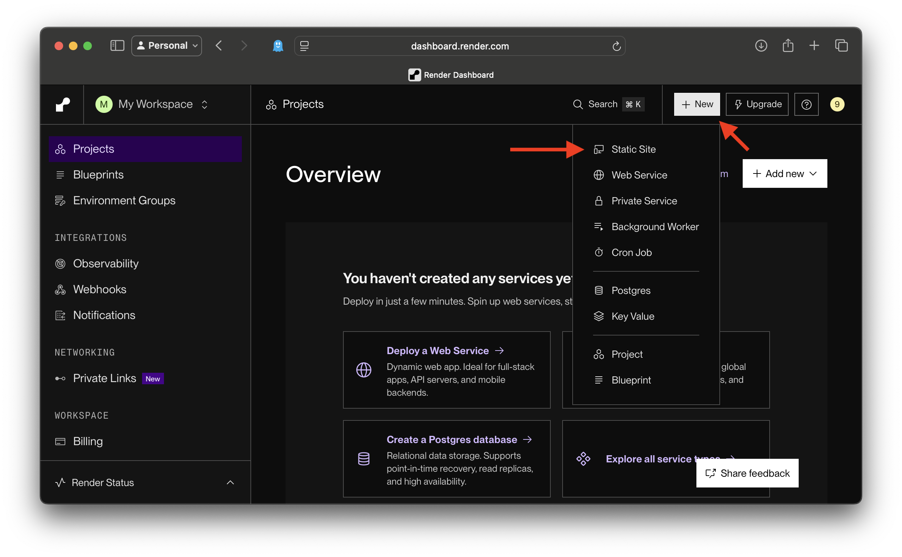
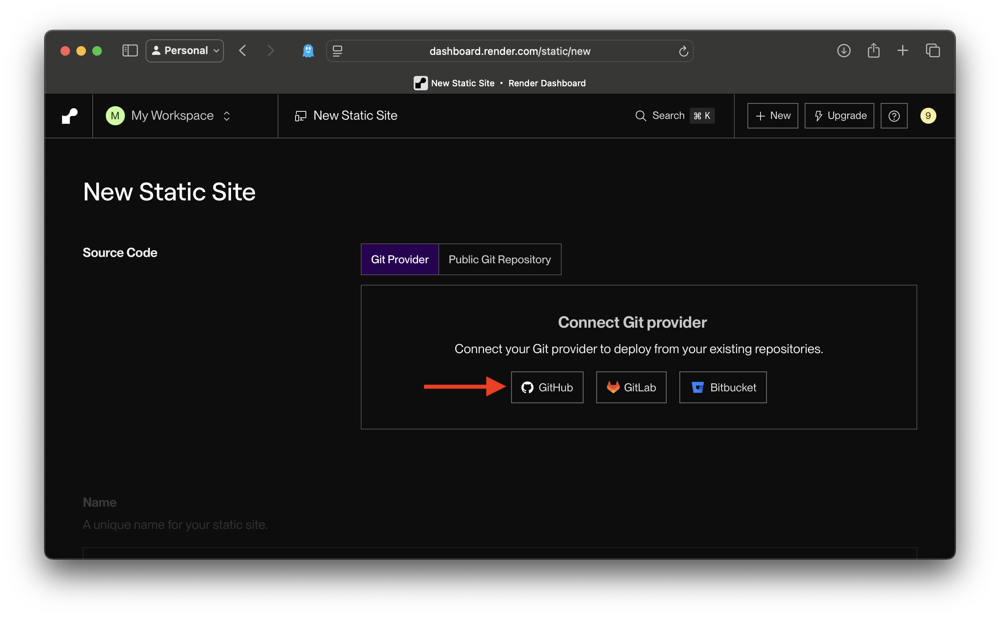
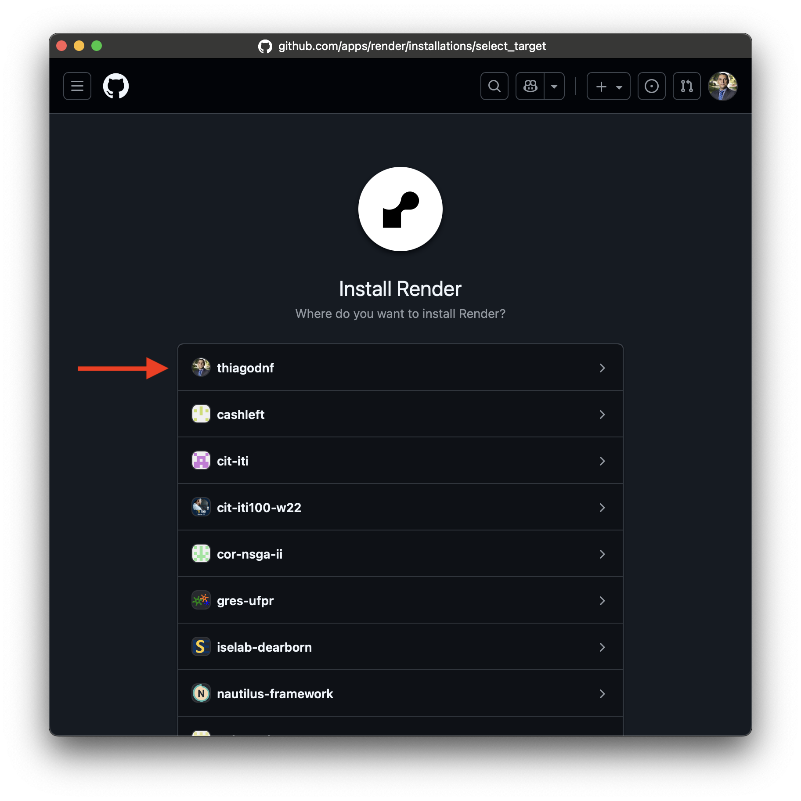
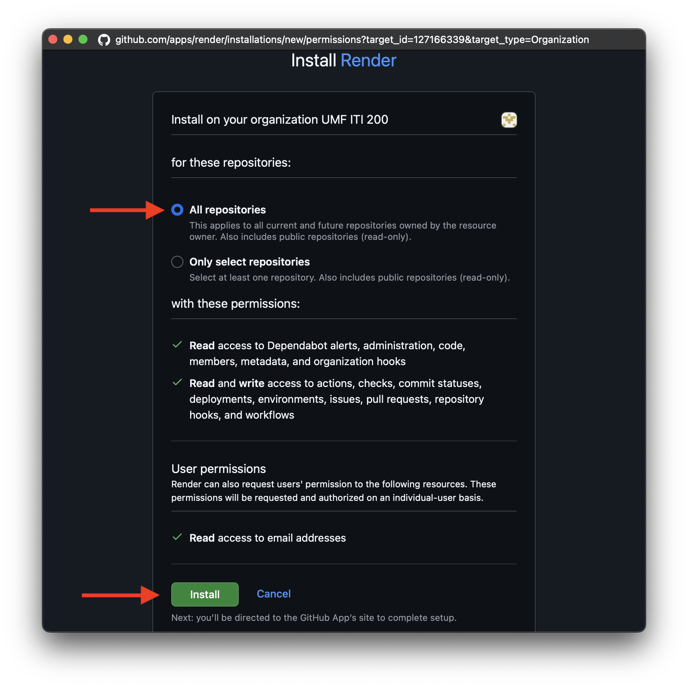
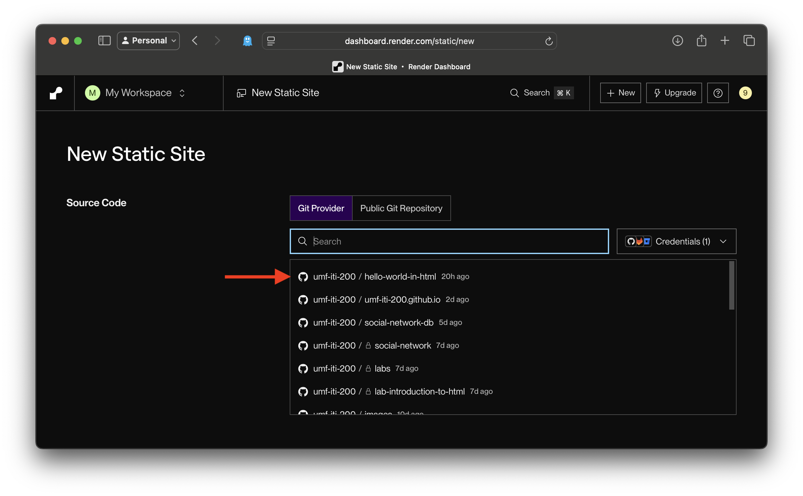
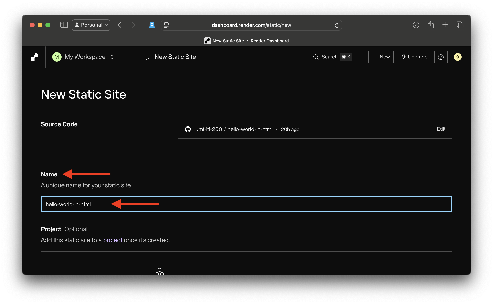
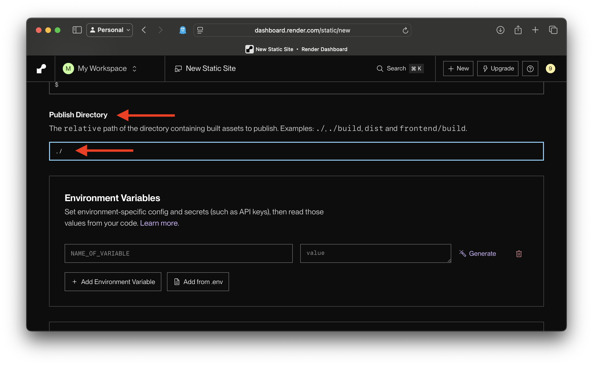
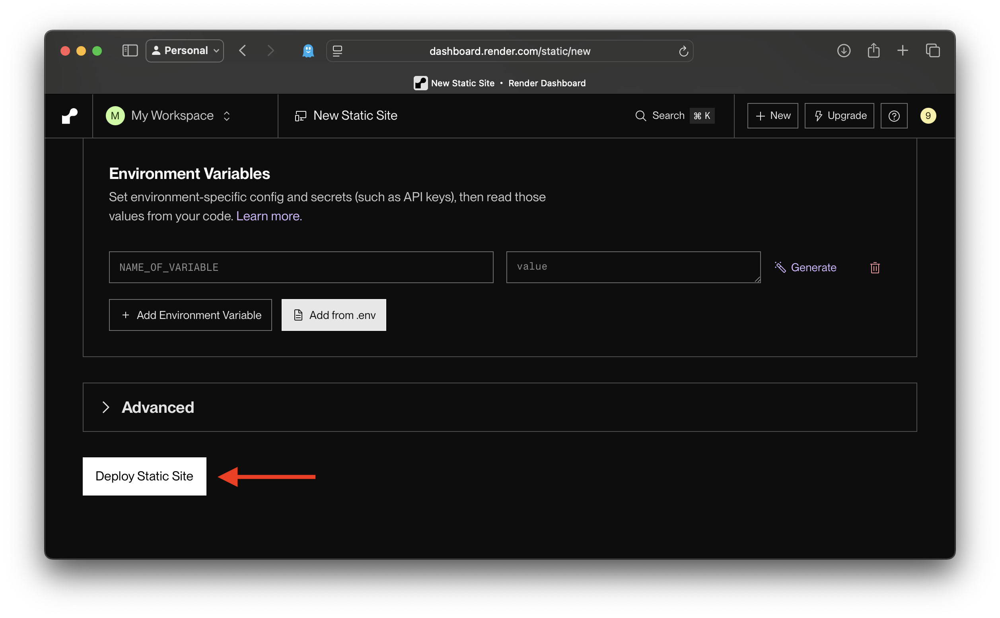
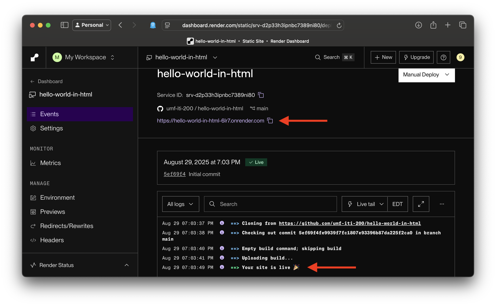
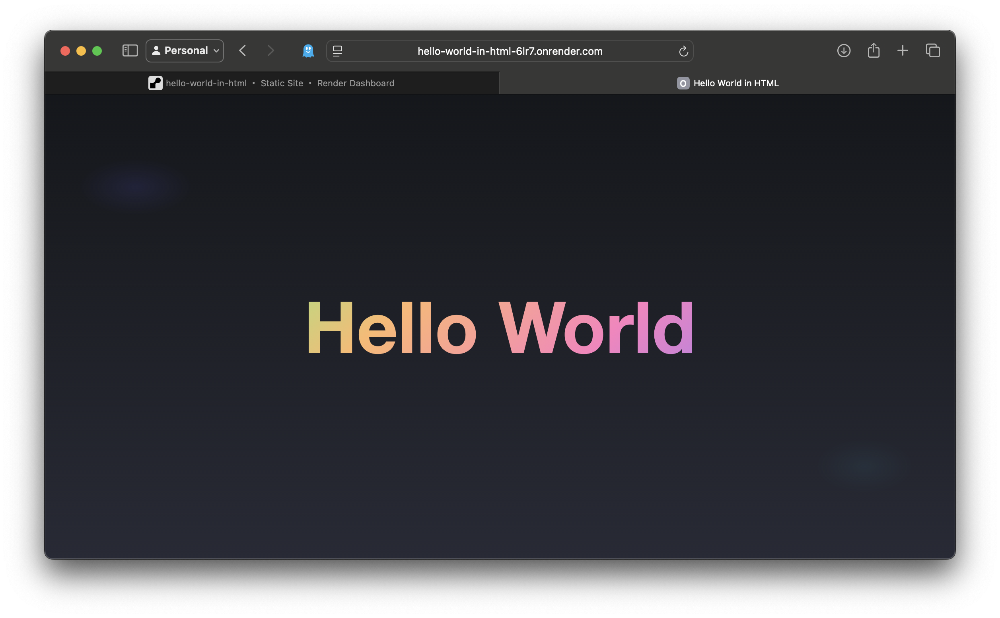

Step 1: Click on New -> Static Site

Step 2: Select your Git provider (e.g., GitHub).

Step 3: If prompted, choose your GitHub account or organization for repository access.

Step 4: Select All repositories, then click Install.

Step 5: From the repository list, search and select the repo to deploy.

Step 6: Enter a unique project Name. This information defines your site’s URL.

Step 7: In Public Directory, enter ./ to deploy the current folder.

Step 8: Finally, click Deploy Static Site.

Step 9: Wait a few minutes for deployment. In the image below you can see the site's URL.

Step 10: Congratulations! You have just deployed your first website.
